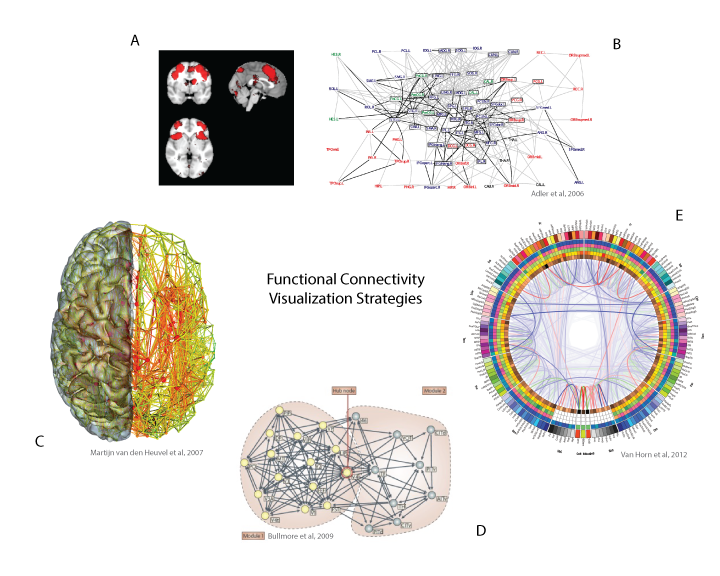

A dataset or result is only as meaningful as the producer’s ability to effectively communicate its content, making proper data visualization essential for the communication and synthesis of ideas. For highly complex, multi-dimensional data produced in the field of brain imaging, this task presents substantial challenges. One pertinent example occurs in a developing field of brain imaging, functional magnetic resonance imaging (fMRI), which aims to understand the dynamic interactions between regions of the brain that work together to produce cognition, thought and behavior – the so-called “functional connectome” ([? ? ? ? ? ? ]). The statistical analysis of this data is highly complex, and typically involves preprocessing to remove unwanted artifactual noise, the performance of a statistical test, correction for multiple comparisons to assess significance, and finally, the dissemination of results to the broader neuroimaging community ([? ? ? ]). While much innovation has occurred in desktop applications to visualize these data, significant results are typically reported in a textual format, with perhaps one or two static images of a selected region of the brain. This dated strategy presents with significant problems. For instance, the selection of a particular set of brain slices, different statistical thresholds, choices of field of view, and coloring biases the image to communicate a strategic point, potentially clouding the interpretation of results. Neuroimaging researchers cannot spend substantial time developing novel visualization strategies, and so static images produced by standard software ([? ? ? ]) become the basis for the visualization of the result. This standard is simply unacceptable during a time when web visualization technology [? ] is blossoming, calling for tools to not only properly visualize a functional connectome, but to make it available in a web browser, interactive and intuitive, allowing for exploration of the data to generate novel hypotheses.
This chapter presents a prototype of such a tool for exploration of brain functional connectivity data, and a review of challenges faced for the visualization of this data. I will first review background of fMRI connectivity analyses, with the goal of making transparent the data that defines the creation of these functional connectomes. I will then introduce visualization as a powerful tool to explore distributions and patterns in these data, and review current tools and strategies for functional connectivity visualization. I will then briefly discuss current publication practices, and introduce a novel prototype interface that could integrate into such practices that better empowers the researcher to visualize a functional connectome. Finally, I will discuss current limitations of the prototype, and long term vision for this work.
Functional magnetic resonance imaging (fMRI) is an established imaging protocol for assessing activity in the human brain. fMRI measures the blood oxygen level dependent (BOLD) response, an indirect measure of local neuronal signaling, that can subsequently be used to investigate functional differences between individuals and behavioral states ([? ? ]). A typical experiment involves the collection of BOLD data from a series of “voxels” (akin to three dimensional pixels) that cover the entire brain over the course of an experiment (either task-based or “resting” quietly). This data is then analyzed in the context of a hypothesis, and the basis of the hypothesis informs the resulting processing and statistical analysis. For example, an investigator interested in temporal relations between different parts of the brain, called the “functional connectome” will begin with a four dimensional dataset having three spatial dimensions, and one temporal dimension. Each 3D voxel contains a value that reflects the BOLD response, and so a plot of this value over time reflects a proxy of a neuronal activity at that spatial location. Assessing the similarity of these timecourses for all voxels in the brain is the basis of functional connectivity analyses, as voxels with correlated temporal activity are hypothesized to be synchronously active. Thus, the result of a functional connectivity analysis is typically a square connectivity matrix, where each coordinate (a voxel ([? ]), region ([? ? ]), or data-driven parcellation ([? ? ? ])) represents some probability of connection (correlation) between two coordinates. This presents with the first challenge of data visualization – the responsibility of properly representing uncertainty in the data. The second challenge is thresholding to reduce the dimensionality of the data. A typical imaging sequence with images of size 91 x 109 x 91 can result in approximately 25,000,000K values in the matrix, however since spatially similar regions are highly correlated ([? ]), it is ideal to reduce the size by defining meaningful parcels of related voxels.
The core goal of a functional connectome visualization is thus to reveal which parts of the brain are most likely to be working synchronously. An ideal visualization will show where significant connections occur, and how confident one can be about their presence. The visualization must use color, depth, dimensions, thickness, and controls responsibly so this simple goal is not lost. Historically, the derivation of a static brain image has been to inform about a specific result, however with the explosion of novel imaging technology ([? ? ]), and databases ([? ? ? ? ? ]), this task has shifted from a reporting to an investigatory one. I will first discuss the progression, advantages, and disadvantages of tools for visualizing connectivity graphs, and transition into the methods for the development of a prototype to address current challenges.
The earliest derivations of functional connectivity reflect the limitations of early software, meaning visualization of any brain-based data was limited to the orthogonal views of a three-dimensional brain (Figure B.1a). Traditional software packages ([? ? ]) offer some version of a viewer to overlay a functional result on an anatomical image, and the choice of slice to show reflects the bias of the creator. A common analysis suite, Statistical Parametric Mapping (SPM) ([? ]) developed the “glass brain,” a maximum intensity projection, as a means to literally make results transparent.
The traditional glass brain presents with the problem that these connectivity graphs are not focused on the spatial locations themselves, but rather, the relationships between them. This is an example of a visualization strategy not well fit to the data being visualized. A natural progression was to represent connectivity matrices with traditional graph-based approaches, meaning networks of nodes and links between them (Figure B.1b) ([? ]). Strength between connections, or uncertainty, could be illustrated with subtle differences in color or line thickness, and regional information could be added based on positioning or coloring. However, the weakness in these visualizations is that intuitive spatial representation is lost ([? ? ]).
The next logical step was to overlay these connectivity maps back onto anatomical brains (Figure B.1c) ([? ? ]). While this restores the spatial meaning, there are several issues with this approach. While three-dimensional renders are more visually appealing, the added dimension risks over-complicating the visualization ([? ]), or taxing the web browser ([? ]). Further, a static visualization of a three-dimensional image can hide data.
These early visualizations shed light on another important observation – it is more important to synthesize what the links represent than visualize the links themselves. Therefore, the field returned to more traditional “graph based” approaches. With previous methods, distance represented spatial distance in anatomical space. With new methods, distance represents connection strength ([? ]). The “force directed graph” (Figure B.1d) available in a software package like Gephi ([? ]) was a powerful strategy to very quickly show functional relationships between regions. The idea of “bundling” grew out of this work, or grouping connections that might be grouped based on an unsupervised hierarchical clustering of the data (Figure B.1e) ([? ? ]). It followed to neatly organize this data in a circle, a graph called a “connectogram” ([? ]), and arrange the nodes around the circle to reflect positioning in the brain from front to back. This is the current state of functional connectivity visualization, which must be better integrated into web browsers and journals for publication.

The sheer complexity of these datasets contrasts with the limitations of the amount of data that can be shown in a web browser, which is largely dependent on the memory of the machine accessing it. Methods such as caching, edge computing, data replication, and proper utilization of database querying make the goal of showing some aspect of functional connectivity data a reasonable one. In print media, the standard of publication is tied back to our preference to read books, and scientific journals themselves, which dates back to 1665 when Philosophical Transactions of the Royal Society was released as the first exclusively scientific journal. The modern version of this trend is distribution of electronic articles, many of which are packaged nicely into PDF files. Researchers typically export an image from a software tool, and then add additional labels or coloring in a vector graphics program. This procedure is highly time intensive, and unfortunately, it is not a requirement to share the production procedure. It would be highly valuable to have a web framework that not only standardizes the data processing, but also provides standards for visualization of the result.